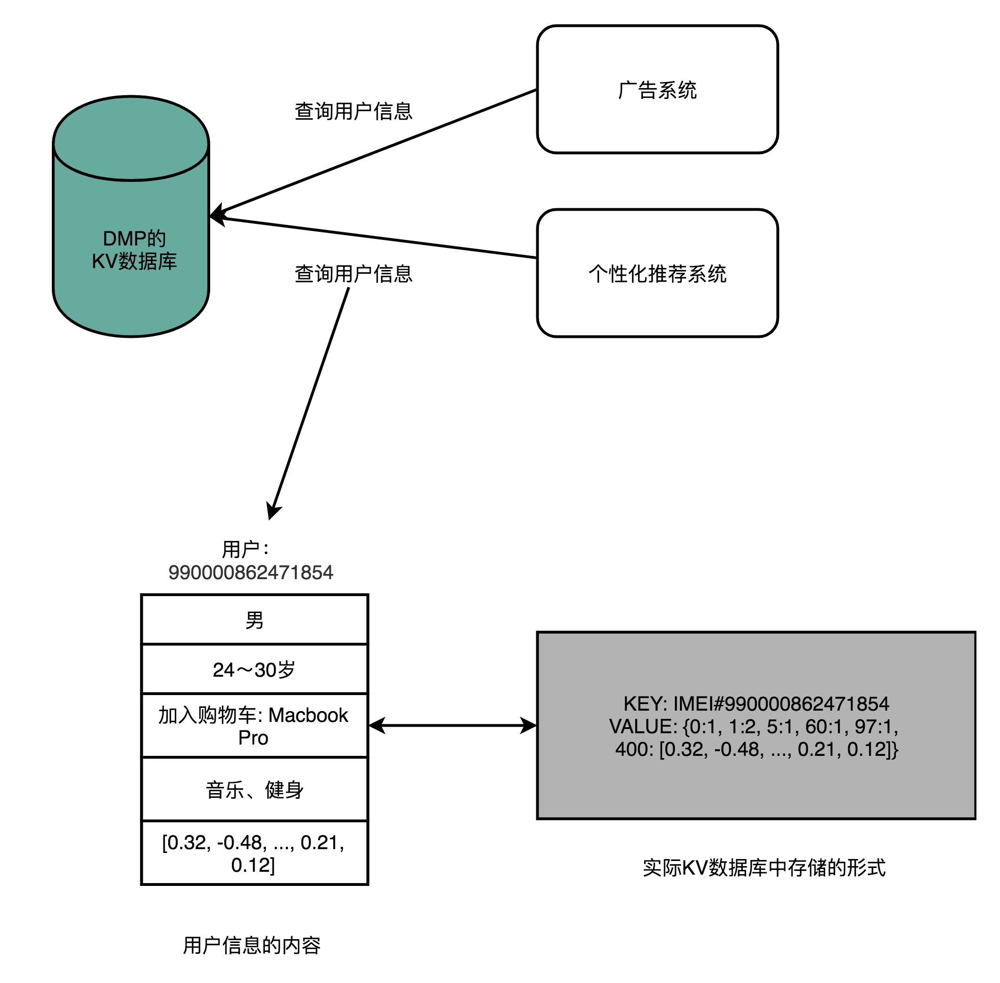

- 00 开篇词 为什么你需要学习计算机组成原理？.md
- 01 冯·诺依曼体系结构：计算机组成的金字塔.md
- 02 给你一张知识地图，计算机组成原理应该这么学.md
- 03 通过你的CPU主频，我们来谈谈“性能”究竟是什么？.md
- 04 穿越功耗墙，我们该从哪些方面提升“性能”？.md
- 05 计算机指令：让我们试试用纸带编程.md
- 06 指令跳转：原来if...else就是goto.md
- 07 函数调用：为什么会发生stack overflow？.md
- 08 ELF和静态链接：为什么程序无法同时在Linux和Windows下运行？.md
- 09 程序装载：“640K内存”真的不够用么？.md
- 10 动态链接：程序内部的“共享单车”.md
- 11 二进制编码：“手持两把锟斤拷，口中疾呼烫烫烫”？.md
- 12 理解电路：从电报机到门电路，我们如何做到“千里传信”？.md
- 13 加法器：如何像搭乐高一样搭电路（上）？.md
- 14 乘法器：如何像搭乐高一样搭电路（下）？.md
- 15 浮点数和定点数（上）：怎么用有限的Bit表示尽可能多的信息？.md
- 16 浮点数和定点数（下）：深入理解浮点数到底有什么用？.md
- 17 建立数据通路（上）：指令加运算=CPU.md
- 18 建立数据通路（中）：指令加运算=CPU.md
- 19 建立数据通路（下）：指令加运算=CPU.md
- 20 面向流水线的指令设计（上）：一心多用的现代CPU.md
- 21 面向流水线的指令设计（下）：奔腾4是怎么失败的？.md
- 22 冒险和预测（一）：hazard是“危”也是“机”.md
- 23 冒险和预测（二）：流水线里的接力赛.md
- 24 冒险和预测（三）：CPU里的“线程池”.md
- 25 冒险和预测（四）：今天下雨了，明天还会下雨么？.md
- 26 Superscalar和VLIW：如何让CPU的吞吐率超过1？.md
- 27 SIMD：如何加速矩阵乘法？.md
- 28 异常和中断：程序出错了怎么办？.md
- 29 CISC和RISC：为什么手机芯片都是ARM？.md
- 30 GPU（上）：为什么玩游戏需要使用GPU？.md
- 31 GPU（下）：为什么深度学习需要使用GPU？.md
- 32 FPGA、ASIC和TPU（上）：计算机体系结构的黄金时代.md
- 33 解读TPU：设计和拆解一块ASIC芯片.md
- 34 理解虚拟机：你在云上拿到的计算机是什么样的？.md
- 35 存储器层次结构全景：数据存储的大金字塔长什么样？.md
- 36 局部性原理：数据库性能跟不上，加个缓存就好了？.md
- 37 理解CPU Cache（上）：“4毫秒”究竟值多少钱？.md
- 38 高速缓存（下）：你确定你的数据更新了么？.md
- 39 MESI协议：如何让多核CPU的高速缓存保持一致？.md
- 40 理解内存（上）：虚拟内存和内存保护是什么？.md
- 41 理解内存（下）：解析TLB和内存保护.md
- 42 总线：计算机内部的高速公路.md
- 43 输入输出设备：我们并不是只能用灯泡显示“0”和“1”.md
- 44 理解IO_WAIT：IO性能到底是怎么回事儿？.md
- 45 机械硬盘：Google早期用过的“黑科技”.md
- 46 SSD硬盘（上）：如何完成性能优化的KPI？.md
- 47 SSD硬盘（下）：如何完成性能优化的KPI？.md
- 48 DMA：为什么Kafka这么快？.md
- 49 数据完整性（上）：硬件坏了怎么办？.md
- 50 数据完整性（下）：如何还原犯罪现场？.md
- 51 分布式计算：如果所有人的大脑都联网会怎样？.md
- 52 设计大型DMP系统（上）：MongoDB并不是什么灵丹妙药.md
- 53 设计大型DMP系统（下）：SSD拯救了所有的DBA.md
- 54 理解Disruptor（上）：带你体会CPU高速缓存的风驰电掣.md
- 55 理解Disruptor（下）：不需要换挡和踩刹车的CPU，有多快？.md
- 结束语 知也无涯，愿你也享受发现的乐趣.md
52 设计大型DMP系统（上）：MongoDB并不是什么灵丹妙药
如果你一讲一讲跟到现在，那首先要恭喜你，马上就看到胜利的曙光了。过去的 50 多讲里，我把计算机组成原理中的各个知识点，一点一点和你拆解了。对于其中的很多知识点，我也给了相应的代码示例和实际的应用案例。
不过呢，相信你和我一样，觉得只了解这样一个个零散的知识点和案例还不过瘾。那么从今天开始，我们就进入应用篇。我会通过两个应用系统的案例，串联起计算机组成原理的两大块知识点，一个是我们的整个存储器系统，另一个自然是我们的 CPU 和指令系统了。
我们今天就先从搭建一个大型的 DMP 系统开始，利用组成原理里面学到的存储器知识，来做选型判断，从而更深入地理解计算机组成原理。
DMP：数据管理平台
我们先来看一下什么是 DMP 系统。DMP 系统的全称叫作数据管理平台（Data Management Platform），目前广泛应用在互联网的广告定向（Ad Targeting）、个性化推荐（Recommendation）这些领域。
通常来说，DMP 系统会通过处理海量的互联网访问数据以及机器学习算法，给一个用户标注上各种各样的标签。然后，在我们做个性化推荐和广告投放的时候，再利用这些这些标签，去做实际的广告排序、推荐等工作。无论是 Google 的搜索广告、淘宝里千人千面的商品信息，还是抖音里面的信息流推荐，背后都会有一个 DMP 系统。

那么，一个 DMP 系统应该怎么搭建呢？对于外部使用 DMP 的系统或者用户来说，可以简单地把 DMP 看成是一个键 - 值对（Key-Value）数据库。我们的广告系统或者推荐系统，可以通过一个客户端输入用户的唯一标识（ID），然后拿到这个用户的各种信息。
这些信息中，有些是用户的人口属性信息（Demographic），比如性别、年龄；有些是非常具体的行为（Behavior），比如用户最近看过的商品是什么，用户的手机型号是什么；有一些是我们通过算法系统计算出来的兴趣（Interests），比如用户喜欢健身、听音乐；还有一些则是完全通过机器学习算法得出的用户向量，给后面的推荐算法或者广告算法作为数据输入。
基于此，对于这个 KV 数据库，我们的期望也很清楚，那就是：低响应时间（Low Response Time）、高可用性（High Availability）、高并发（High Concurrency）、海量数据（Big Data），同时我们需要付得起对应的成本（Affordable Cost）。如果用数字来衡量这些指标，那么我们的期望就会具体化成下面这样。
- 低响应时间：一般的广告系统留给整个广告投放决策的时间也就是 10ms 左右，所以对于访问 DMP 获取用户数据，预期的响应时间都在 1ms 之内。
- 高可用性：DMP 常常用在广告系统里面。DMP 系统出问题，往往就意味着我们整个的广告收入在不可用的时间就没了，所以我们对于可用性的追求可谓是没有上限的。Google 2018 年的广告收入是 1160 亿美元，折合到每一分钟的收入是 22 万美元。即使我们做到 99.99% 的可用性，也意味着每个月我们都会损失 100 万美元。
- 高并发：还是以广告系统为例，如果每天我们需要响应 100 亿次的广告请求，那么我们每秒的并发请求数就在 100 亿 / (86400) ~= 12K 次左右，所以我们的 DMP 需要支持高并发。
- 数据量：如果我们的产品针对中国市场，那么我们需要有 10 亿个 Key，对应的假设每个用户有 500 个标签，标签有对应的分数。标签和分数都用一个 4 字节（Bytes）的整数来表示，那么一共我们需要 10 亿 x 500 x (4 + 4) Bytes = 400 TB 的数据了。
- 低成本：我们还是从广告系统的角度来考虑。广告系统的收入通常用 CPM（Cost Per Mille），也就是千次曝光来统计。如果千次曝光的利润是 $0.10，那么每天 100 亿次的曝光就是 100 万美元的利润。这个利润听起来非常高了。但是反过来算一下，你会发现，DMP 每 1000 次的请求的成本不能超过 $0.10。最好只有 $0.01，甚至更低，我们才能尽可能多赚到一点广告利润。
这五个因素一结合，听起来是不是就不那么简单了？不过，更复杂的还在后面呢。
虽然从外部看起来，DMP 特别简单，就是一个 KV 数据库，但是生成这个数据库需要做的事情更多。我们下面一起来看一看。

在这个系统中，我们关心的是蓝色的数据管道、绿色的数据仓库和 KV 数据库
为了能够生成这个 KV 数据库，我们需要有一个在客户端或者 Web 端的数据采集模块，不断采集用户的行为，向后端的服务器发送数据。服务器端接收到数据，就要把这份数据放到一个数据管道（Data Pipeline）里面。数据管道的下游，需要实际将数据落地到数据仓库（Data Warehouse），把所有的这些数据结构化地存储起来。后续，我们就可以通过程序去分析这部分日志，生成报表或者或者利用数据运行各种机器学习算法。
除了这个数据仓库之外，我们还会有一个实时数据处理模块（Realtime Data Processing），也放在数据管道的下游。它同样会读取数据管道里面的数据，去进行各种实时计算，然后把需要的结果写入到 DMP 的 KV 数据库里面去。
MongoDB 真的万能吗？
面对这里的 KV 数据库、数据管道以及数据仓库，这三个不同的数据存储的需求，最合理的技术方案是什么呢？你可以先自己思考一下，我这里先卖个关子。
我共事过的不少不错的 Web 程序员，面对这个问题的时候，常常会说：“这有什么难的，用 MongoDB 就好了呀！”如果你也选择了 MongoDB，那最终的结果一定是一场灾难。我为什么这么说呢？
MongoDB 的设计听起来特别厉害，不需要预先数据 Schema，访问速度很快，还能够无限水平扩展。作为 KV 数据库，我们可以把 MongoDB 当作 DMP 里面的 KV 数据库；除此之外，MongoDB 还能水平扩展、跑 MQL，我们可以把它当作数据仓库来用。至于数据管道，只要我们能够不断往 MongoDB 里面，插入新的数据就好了。从运维的角度来说，我们只需要维护一种数据库，技术栈也变得简单了。看起来，MongoDB 这个选择真是相当完美！
但是，作为一个老程序员，第一次听到 MongoDB 这样“万能”的解决方案，我的第一反应是，“天底下哪有这样的好事”。所有的软件系统，都有它的适用场景，想通过一种解决方案适用三个差异非常大的应用场景，显然既不合理，又不现实。接下来，我们就来仔细看一下，这个“不合理”“不现实”在什么地方。
上面我们已经讲过 DMP 的 KV 数据库期望的应用场景和性能要求了，这里我们就来看一下数据管道和数据仓库的性能取舍。
对于数据管道来说，我们需要的是高吞吐量，它的并发量虽然和 KV 数据库差不多，但是在响应时间上，要求就没有那么严格了，1-2 秒甚至再多几秒的延时都是可以接受的。而且，和 KV 数据库不太一样，数据管道的数据读写都是顺序读写，没有大量的随机读写的需求。
数据仓库就更不一样了，数据仓库的数据读取的量要比管道大得多。管道的数据读取就是我们当时写入的数据，一天有 10TB 日志数据，管道只会写入 10TB。下游的数据仓库存放数据和实时数据模块读取的数据，再加上个 2 倍的 10TB，也就是 20TB 也就够了。
但是，数据仓库的数据分析任务要读取的数据量就大多了。一方面，我们可能要分析一周、一个月乃至一个季度的数据。这一次分析要读取的数据可不是 10TB，而是 100TB 乃至 1PB。我们一天在数据仓库上跑的分析任务也不是 1 个，而是成千上万个，所以数据的读取量是巨大的。另一方面，我们存储在数据仓库里面的数据，也不像数据管道一样，存放几个小时、最多一天的数据，而是往往要存上 3 个月甚至是 1 年的数据。所以，我们需要的是 1PB 乃至 5PB 这样的存储空间。
我把 KV 数据库、数据管道和数据仓库的应用场景，总结成了一个表格，放在这里。你可以对照着看一下，想想为什么 MongoDB 在这三个应用场景都不合适。

在 KV 数据库的场景下，需要支持高并发。那么 MongoDB 需要把更多的数据放在内存里面，但是这样我们的存储成本就会特别高了。
在数据管道的场景下，我们需要的是大量的顺序读写，而 MongoDB 则是一个文档数据库系统，并没有为顺序写入和吞吐量做过优化，看起来也不太适用。
而在数据仓库的场景下，主要的数据读取时顺序读取，并且需要海量的存储。MongoDB 这样的文档式数据库也没有为海量的顺序读做过优化，仍然不是一个最佳的解决方案。而且文档数据库里总是会有很多冗余的字段的元数据，还会浪费更多的存储空间。
那我们该选择什么样的解决方案呢？
拿着我们的应用场景去找方案，其实并不难找。对于 KV 数据库，最佳的选择方案自然是使用 SSD 硬盘，选择 AeroSpike 这样的 KV 数据库。高并发的随机访问并不适合 HDD 的机械硬盘，而 400TB 的数据，如果用内存的话，成本又会显得太高。
对于数据管道，最佳选择自然是 Kafka。因为我们追求的是吞吐率，采用了 Zero-Copy 和 DMA 机制的 Kafka 最大化了作为数据管道的吞吐率。而且，数据管道的读写都是顺序读写，所以我们也不需要对随机读写提供支持，用上 HDD 硬盘就好了。
到了数据仓库，存放的数据量更大了。在硬件层面使用 HDD 硬盘成了一个必选项。否则，我们的存储成本就会差上 10 倍。这么大量的数据，在存储上我们需要定义清楚 Schema，使得每个字段都不需要额外存储元数据，能够通过 Avro/Thrift/ProtoBuffer 这样的二进制序列化的方存储下来，或者干脆直接使用 Hive 这样明确了字段定义的数据仓库产品。很明显，MongoDB 那样不限制 Schema 的数据结构，在这个情况下并不好用。
2012 年前后做广告系统的时候，我们也曾经尝试使用 MongoDB，尽管只是用作 DMP 中的数据报表部分。事实证明，即使是已经做了数据层面的汇总的报表，MongoDB 都无法很好地支撑我们需要的复杂需求。最终，我们也不得不选择在整个 DMP 技术栈里面彻底废弃 MongoDB，而只在 Web 应用里面用用 MongoDB。事实证明，我最初的直觉是正确的，并没有什么万能的解决方案。
总结延伸
好了，相信到这里，你应该对怎么从最基本的原理出发，来选择技术栈有些感觉了。你应该更多地从底层的存储系统的特性和原理去考虑问题。一旦能够从这个角度去考虑问题，那么你对各类新的技术项目和产品的公关稿，自然会有一定的免疫力了，而不会轻易根据商业公司的宣传来做技术选型了。
因为低延时、高并发、写少读多的 DMP 的 KV 数据库，最适合用 SSD 硬盘，并且采用专门的 KV 数据库是最合适的。我们可以选择之前文章里提过的 AeroSpike，也可以用开源的 Cassandra 来提供服务。
对于数据管道，因为主要是顺序读和顺序写，所以我们不一定要选用 SSD 硬盘，而可以用 HDD 硬盘。不过，对于最大化吞吐量的需求，使用 zero-copy 和 DMA 是必不可少的，所以现在的数据管道的标准解决方案就是 Kafka 了。
对于数据仓库，我们通常是一次写入、多次读取。并且，由于存储的数据量很大，我们还要考虑成本问题。于是，一方面，我们会用 HDD 硬盘而不是 SSD 硬盘；另一方面，我们往往会预先给数据规定好 Schema，使得单条数据的序列化，不需要像存 JSON 或者 MongoDB 的 BSON 那样，存储冗余的字段名称这样的元数据。所以，最常用的解决方案是，用 Hadoop 这样的集群，采用 Hive 这样的数据仓库系统，或者采用 Avro/Thrift/ProtoBuffer 这样的二进制序列化方案。
在大型的 DMP 系统设计当中，我们需要根据各个应用场景面临的实际情况，选择不同的硬件和软件的组合，来作为整个系统中的不同组件。
推荐阅读
如果通过这一讲的内容，能让你对大型数据系统的设计有了兴趣，那就再好不过了。我推荐你去读一读《数据密集型应用系统设计》这本书，深入了解一下，设计数据系统需要关注的各个核心要点。